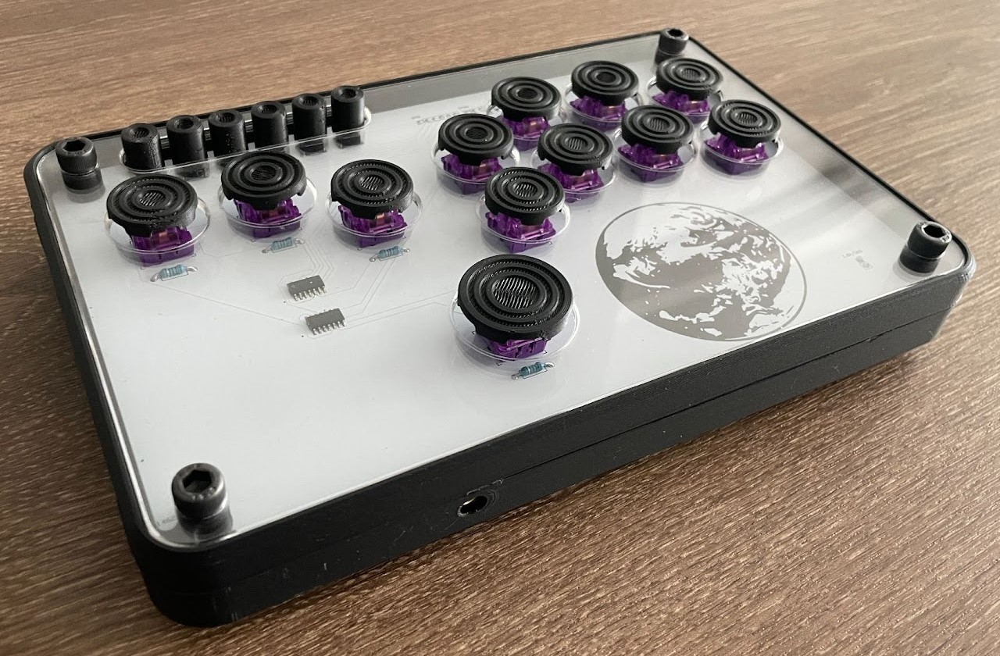

Takubox - Wireless Leverless Controllers | GitHub (WIP)
Welcome to my documentation of the Takubox! The Takubox is a wireless, leverless controller I designed used primarily for competitive fighting games. Some of the features include
- Compatibility with PS5, PC
- SOCD and Input Mode-Switching, powered by Teensy
- Input-display OLED
- Modular directionals
- Hot-swappable keys, audio support
Ver 3.0
Version 3 is a major overhaul to the Takubox! Updates to come soon but heres an overview for now:
- Microcontroller integration (Teensy)
- Input and SOCD Input mode switching via firmware
- Input display OLED
- Thinner profile, low profile switches
UPDATE:
First step was to get started on the firmware. Learning from earlier versions, I chose not to get too excited and skip straight to PCB and frame modeling. By using the Teensy microcontroller and incorporating firmware, I get the ability to create simpler hardware and have much more flexibility in my final product.
This firmware was a way to apply my growing knowledge in embedded systems and OOP. The overall functionality relies around a Gamepad class with 4 main methods, setup, read, process, and output, which allows for a relatively simple program loop. Using a Gamepad class I can essentially represent a fully-functioning virtual Gamepad, while abstracting away many of the more complex details including input setup, debouncing, processing, input display, etc. The Gamepad class is a composite class that includes instances of other classes, including InputDebouncer, GamepadState, etc (more can be seen in the GitHub). These classes are mostly self-explanatory, but allow me to encapsulate seperate responsibilities and functions into distinct objects. This creates a much more digestable firmware, which makes it much easier for me to get right back to where as I periodically return to this project. The functioning display powered by the firmware can be seen in the image above!
Ver 2.0
Ver 2.0 was more a revision to address some of the kinks from Ver 1.0. I adjusted the schematic and PCB to address my older mistakes, including PU resistors, SOIC slots, addition of L3, R3 buttons, etc. I also changed both SOCD cleaning modes to neutral as per rules imposed for pro play by Capcom. I felt this was necessary, as if I plan on selling the controller I should make it tournament legal. Given that Capcom made Street Fighter, the most popular fighting game, it made sense to adhere to those rules.
I also made some small changes to the frame, and ended up selling some of these! While I, and those who bought them were satisfied, I'm always looking to improve my controller. I got a lot of valuable feedback, which will be addressed in Ver 3.0!
Ver 1.0
My main goal for this project was to create a wireless "hitbox" controller compatible with the PS5. Naturally, the best place to start was understanding a controller that already does that, the Dualsense 5. Before starting the project, I had no electronics experience ranging from soldering, circuit design, use of various electrical tools, and especially not PCB design. A lot of this is written in retrospect, so I couldn't capture every detail, but I'll include as much as I can. I'm really thankful to everyone who helped me along the way, and especially this thread on AcidMods.
The first step was to make the board's schematic, which I made using KiCad. The majority of the buttons are active-low, other than the L3 and R3 buttons which I left out in this rendition, and are connected to a row of sockets for accesible soldering. The directional buttons are a bit more complex, as the possibility to press multiple directions at the same time can occur with a leverless controller, as there is no single joystick. Most games don't address this via software, so we must include some form of SOCD cleaning. I found the most cost-effective way to be using NAND gates, initially SN7400N chips, which also aligned with what I was learning in my classes at the time (logic gates, K-maps, etc). This circuit used the Up+Down = UP and Left+Right = NEUTRAL configuration.
Next came designing the PCB, which was pretty straightforward once I understood the basics of KiCad. The buttons all follow a reversible design, allowing for a permanent solder or the use of hotswap sockets. The top left 4 buttons are typical tactile pushbuttons. The 2 NAND chips had a thru-hole footprint (which caused problems later).
Once I ordered the PCBs, I modeled the frame. This was the longest part, as I had to consistently revisit it, but I enjoyed having full control over my board's design. First I created a model of the PCB, to model the frame around. Initially, I created the top half using this clear, acrylic heavy design, but it led to some questions with desigining the back half. The back half would be a compartment for electronics and wiring so using pure acrylic would be difficult/expensive, and creating a hollow, plastic back half would clash with the front half.
With the top half for now, I moved onto assembling the physical PCB and working with the DS5 motherboard. The controller has 1 main board with 2 side boards used to handle the triggers and haptic motors. A good amount of the inputs are analog on the board (L/RT, L/R-Stick), however all the inputs on this controller will be digital, so some modification was required. The address the analog triggers, a PU resistor will be installed to 1.8V to "convert" the trigger to a digital button. The joysticks don't need to be removed, but if they are (which I am doing to keep the frame thinner), they do need to be zero'd out. To do so, I initially used resistors, but due to them being very touch sensitive, I changed to potentiometers for adaptability.
Eventually I ran into a pretty big issue: the SN7400N chips require a 5V input voltage, wheras the DS5 runs on 1.8V logic. This issue was quite a big setback as I had to backtrack on a lot of the work I did before. Initially I came up with the idea to use batteries, but found this would be too inconvenient for the end user, having 2 power supplies. I found some 74LVC00 chips, which run off 1.8V. This was the best solution as it didn't require any major PCB rework, but I did have to change the frame some and purchase adapter boards.
With the frame designed, I enjoyed finally seeing all the work come together into a final assembly. I faced one final error with the directional buttons, but realized this was due to the lack of PU resistors. It was too late to revamp the circuit and design, so I soldered them directly to the back of the frame. The controller was now complete, but definitely far from perfect. Some improvements I want to include in future versions include proper integration of SOIC chips, PU resistors, stabler side buttons, solid color backing (for aesthetic reasons), inclusion of L3 and R3 buttons.